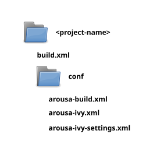
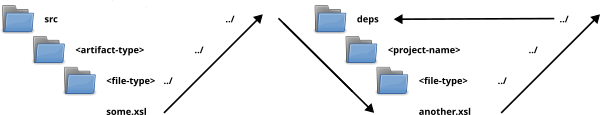

Arousa creates a project structure with a base build.xml file, source folders, etc. You may have noticed the conf folder. The conf folder contains the usual ivy files prefixed with the “arousa-” key. It creates the arousa-ivy that describe the dependencies, the arousa-ivy-settings that describes the repositories and an arousa-build.xml with the ant tasks used in the dependency management operations. The base build file calls imports and calls the arousa build tasks.

In order to use the same path references to dependencies from the source folders and from the dependency folders we use a folder naming convention. The idea is to have the same depth of folders both source folders and from the dependencies folders.
./src/<dependency-type>/xsl --> deps/<some_project>/xsl ./src/<dependency-type>/xproc --> deps/<some_project>/xproc
Doing so you can call some script, like for example a xsl:import on some.xsl with the same path ../../../deps/<project-name>/<file-type>/some.xsl both from the source folder and later on when the xsl is deployed to other projects deps folder.

Note that you could avoid this convention, using options, string substitutions, etc.